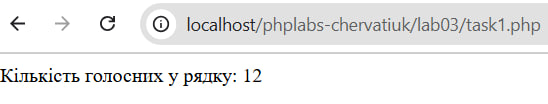
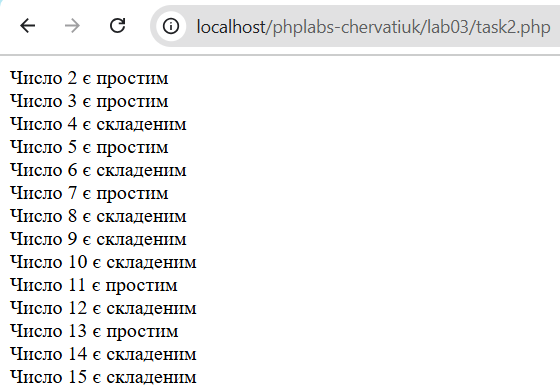

Лабораторна робота №3
Тема: Управління потоками виконання
Виконавець: Черватюк Юлія Василівна
Група: KN1-B22
Варіант: 10
Дата виконання: 01.04.2025
Завдання
Завдання 1
Напишіть програму для підрахунку кількості голосних літер у рядку за допомогою циклу foreach.
Перейти до розв’язку

Завдання 2
Створіть програму для визначення, чи є число простим, використовуючи цикл for для перевірки всіх дільників числа.
Перейти до розв’язку
